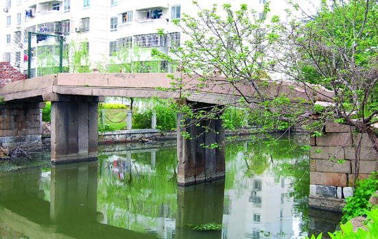

嘉兴市文物保护网 · 市级文物保护单位 · 2014-06-16 · 原文

思贤桥位于嘉兴市秀洲区塘汇街道南湖星辰湾小区与锦绣小区间，始建年代不详，现桥额旁刻 “清光绪十年（1884）”字样。据载，宋时塘汇有座纪念陆贽的思贤乡院，规模宏大，林木葱郁，院前有思贤桥，为嘉禾一胜。东西向跨车思港，系三孔有栏梁式石板桥，全长21.31米，宽2.12米，桥底距水面高2.6米。桥面由4块长条石组成，桥柱由4块条石并列竖置组成，桥栏尚存狮子形望柱3根，东西落坡略呈喇叭型，各设石阶7级和6级。桥额刻“重建思贤桥”，桥身刻有花纹，南北有楹联，因水深不便记录。思贤桥历史悠久，造型美观，做工考究，在市区内此类桥梁已少见，具有较高的历史和艺术价值。2010年公布为嘉兴市级文物保护单位。